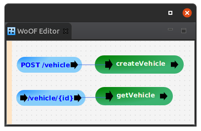

This tutorial demonstrates REST with WoOF.
The example used in this tutorial is two end points:
To configure REST end-points with WoOF, use the following from the palette:
The HTTP Continuation is separate, as HTTP redirects are continuations via GET methods. Therefore, it is possible to connect to this to trigger a redirect to the respective URL.
The configuration of the two end points are as follows:
The handling of the end-points is provided by connecting them to other items. In this case, procedures provide the implementation of the end points.
Similar to AJAX with templates tutorial object parsing and responding is via the @HttpObject and ObjectResponse. The below is the object used in this tutorial:
@Entity
@HttpObject
@Data
@NoArgsConstructor
@RequiredArgsConstructor
public class Vehicle {
@Id
@GeneratedValue(strategy = GenerationType.IDENTITY)
private Integer id;
@NonNull
@Column(name = "VEHICLE_TYPE")
private String vehicleType;
@NonNull
private Integer wheels;
}
For convenience, the Entity object is re-used for parsing out the POST pay load.
The implementation of the POST handling is the following:
public void createVehicle(Vehicle vehicle, EntityManager entityManager) {
if ((vehicle == null) || (vehicle.getVehicleType() == null)) {
throw new HttpException(new HttpStatus(444, "Must have vehicleType"));
}
entityManager.persist(vehicle);
}
As the JSON data is loaded onto the object, it is passed to the EntityManager to store within the database.
Should there be invalid data, a HttpException can be thrown to specify the response status code and entity pay load. In this case, a custom status code is used.
Using {...} within the path specifies a path parameter.
In the case of this tutorial, this is used to specify the vehicle identifier within the URL.
Note that multiple path parameters may be specified in the URL along with ability to specify them where ever appropriate in the URL. The only requirement is that path parameters in the URL are separated by at least one character.
The following demonstrates passing the path parameter value to the handling logic:
public void getVehicle(@HttpPathParameter("id") String vehicleId, EntityManager entityManager,
ObjectResponse<Vehicle> responder) {
responder.send(entityManager.find(Vehicle.class, Integer.parseInt(vehicleId)));
}
The @HttpPathParameter annotation specifies to load the path value. See the other annotations in the package for extracting various aspects of the HTTP request.
The following shows the ease of testing the REST end points:
@RegisterExtension
public final MockWoofServerExtension server = new MockWoofServerExtension();
@Test
public void postMissingData() throws Exception {
// POST with missing data
MockHttpResponse response = this.server
.send(MockHttpServer.mockRequest("/vehicle").method(HttpMethod.POST).entity("{}"));
response.assertResponse(444, "{\"error\":\"Must have vehicleType\"}");
}
@Test
public void postEntry(EntityManager entityManager) throws Exception {
// POST to create row and validate successful
MockHttpResponse response = this.server.send(MockHttpServer.mockRequest("/vehicle").method(HttpMethod.POST)
.header("content-type", "application/json").entity("{ \"vehicleType\": \"bike\", \"wheels\": 2 }"));
response.assertResponse(204, "");
// Ensure row created
Vehicle vehicle = entityManager.createQuery("SELECT V FROM Vehicle V WHERE vehicleType = 'bike'", Vehicle.class)
.getSingleResult();
assertNotNull(vehicle, "Should have row created");
assertEquals(2, vehicle.getWheels().intValue(), "Incorrect row");
}
@Test
public void getEntry(EntityManager entityManager) throws Exception {
// Create entry
Vehicle vehicle = new Vehicle("car", 4);
entityManager.persist(vehicle);
JpaManagedObjectSource.commitTransaction(entityManager);
// GET entry
MockHttpResponse response = this.server.send(MockHttpServer.mockRequest("/vehicle/" + vehicle.getId()));
assertEquals(200, response.getStatus().getStatusCode(), "Should be successful");
response.assertHeader("content-type", "application/json");
JsonNode entity = new ObjectMapper().readTree(response.getEntity(null));
assertEquals(vehicle.getId().intValue(), entity.get("id").asInt(), "Incorrect id");
assertEquals("car", entity.get("vehicleType").asText(), "Incorrect vehicle type");
assertEquals(4, entity.get("wheels").asInt(), "Incorrect wheels");
}
However, as the logic is a POJO (plain old java object), the logic can also be unit tested as follows:
@Test
public void createWithMissingData(EntityManager entityManager) {
try {
new RestLogic().createVehicle(new Vehicle(), entityManager);
fail("Should not be successful");
} catch (HttpException ex) {
assertEquals(444, ex.getHttpStatus().getStatusCode(), "Incorrect status");
assertEquals("Must have vehicleType", ex.getMessage(), "Incorrect reason");
}
}
@Test
public void createVehicle(EntityManager entityManager) {
// Create the vehicle
new RestLogic().createVehicle(new Vehicle("tricycle", 3), entityManager);
// Ensure row created
Vehicle vehicle = entityManager
.createQuery("SELECT V FROM Vehicle V WHERE vehicleType = 'tricycle'", Vehicle.class).getSingleResult();
assertNotNull(vehicle, "Should have row created");
assertEquals(3, vehicle.getWheels().intValue(), "Incorrect row");
}
@Test
public void getVehicle(EntityManager entityManager) {
// Create entry
Vehicle created = new Vehicle("unicycle", 1);
entityManager.persist(created);
// Obtain the vehicle
MockObjectResponse<Vehicle> response = new MockObjectResponse<>();
new RestLogic().getVehicle(String.valueOf(created.getId()), entityManager, response);
Vehicle vehicle = response.getObject();
assertEquals("unicycle", vehicle.getVehicleType(), "Incorrect row sent");
}
The next tutorial covers serving static (files) content for single page applications.